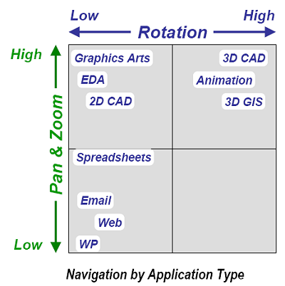

|
Daha Yüksek Bant Geniþliði Ayarlamasý
Önceden de belirtildiði gibi, 3D CAD uygulamalarýndaki ayarlamalar, daha geleneksel olan 2D uygulamalarý ile karþýlaþtýrýldýðýnda, çok daha yaygýn ve etkili performans için daha çok DoF gereksinimi duymaktadýr.
Gördüðünüz þekilde, deðiþik tarz ayarlamalar için kaç tane simültane DoF gerektiði gösterilmektedir; aþaðý yukarý hareket, kaydýrma, yakýnlaþtýrma, tekrar kaydýrma, yakýnlaþtýrma ve deðiþtirmek.
Sonraki þekilde gösterildiði gibi, 3D CAD uygulamalarý genel olarak 6DoF kadranýna denk düþmektedir.

Bu, aslýnda tipik 3D uygulamalarý olan, simültane DoF sunan araçlar için- 6 DoF'a kadar, potansiyel olarak yüksek zoom ile uygulamalara eriþim, pan ve yüksek deðiþim ifade eder.
Sýradaki liste, genel çevre aygýtlarýný ve özelliklerini, fark edilir simültane DoF'larýn sayýsýný göstermektedir.
Geleneksel Mouse 2DoF sunar, masa boyunca harekete imkan verir. Mouse scrool'u, ekstra olarak 1DoF daha saðlar (tipik olarak belge tabanlý yazýlýmlarda yukarý aþaðý hareket ve 3D uygulamalarýnda zoom için). Kullanýcýlar, genel olarak Mouse'u ve scrool'u ayný anda oynatmazlar, bu sebeple scrool'lu mouse'lar 2+1 DoF'lu olarak tanýmlanabilirler.
6DoF'lu bir alet, kullanýcýya ayný anda hareket, zoom, pan ve döndürme yapma imkaný saðlar.
Diðer taraftan, scrool'lu mouse'un 2+1 DoF'lu kapasitesi, 6DoF'lu aletinkine ulaþabilmek için, ilave bir tuþa basýlmayý gerektirir. Genel olarak þöyle olur;
- Mode A: (Ctrl basýlý)+ Mouse hareketi- pan
- Mode B: (Alt basýlý) Mouse hareketi- rotate
- Mode C: (basýlý tuþ yok)+ Mouse scrool hareketi- zoom
UI bant geniþliðinde sistem kullanarak, sýradaki karþýlaþtýrma 6DoF'lu bir alet ile 3D navigasyonu sonuçlarýný vermektedir.
3D CAD uygulamalarýndaki en genel aktivitelerden biri de modelin bir noktadan diðer noktaya sýk ve kesin hareketidir.
GE çalýþmasýnda, kullanýcýlar 2D klasik fareye oranla 6DoF ürün (3Dconnexion 3D fare) ile 3D modelin hedef noktasýna nerdeyse 2 kat daha hýzlý ulaþabildiler.
Standart fare ile, 3D modelde istenen noktada çalýþma süresi %89 daha fazla oldu. Dahasý, tüm kullanýcýlar 6DoF ürünü kullandýklarýnda, 1.56'dan 2.25 kata kadar kalýcý olarak daha hýzlý idiler.
3.7 Kullanýcý Arayüzü araþtýrma Sonuçlarý
3D CAD kullanýcýlarý çok daha yüksek düzeyde kullanýcý arayüzü bant geniþliðine gerek duyuyor.
3D CAD kullanýcýlarý sýradan bilgisayar kullanýcýlarýna oranla 5 ila 10 kata kadar daha fazla navigasyon/dakika ve komut/dakika oranýna sahip. 6DoF navigasyonlar yaygýn. Bu noktalar, 3D CAD kullanýcýlarýnýn uygulamalarýný kullanýrken, onlara üretkenlik artýþý ve kullanýcý arayüzü bant geniþliðini artýrma önemli fýrsatlar sundu.
Verimliliði geliþtirmek için önemli potansiyeli bulunan iki kullanýcý arayüzü karþýlaþtýrýlýr :
- iki elle kullanýlan arayüzler, hakim olan elle farenin kullanýlmasý diðeri ile baþka bir aygýt kullanýlmasý (1.36 times faster—IBM research)
- Özellikle 3D uygulamalarýnda A6DoF aygýt diðer el ile kullanýlýr (1.89 times faster—GE research)
Ayrýca bu yaklaþýmlarýn katký etkisi olmalýdýr, dahasý 3D CAD kullanýcýlarý için kullanýcý arayüz bant geniþliðinin artýrýlmalýdýr.
Verimlilik artýþý CAD dizayn mühendisleri tarafýndan rapor edildi ve CATIA kullanýcýlarýnýn verimlilik zaman ölçümleri bu araþtýrmanýn temelinde yatan belirleyicilerdendir.
Verilen bu etkileyici verimlilik artýþlarý ile birlikte su daha büyük bir ekonomik soru geliyor : CAD dizayn mühendislerini 3D Mouse'larla donatmanýn ekonomik geri ödemesi nedir?
|